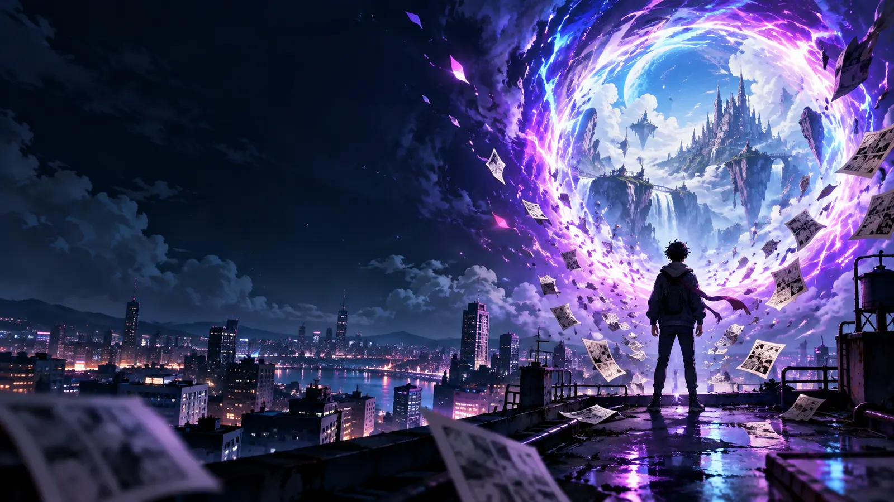
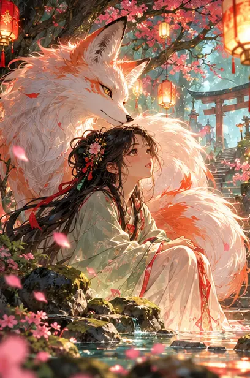
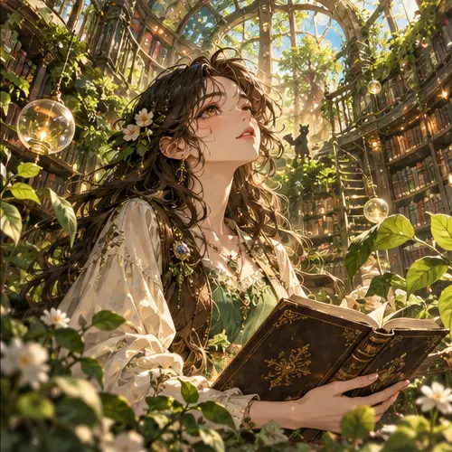
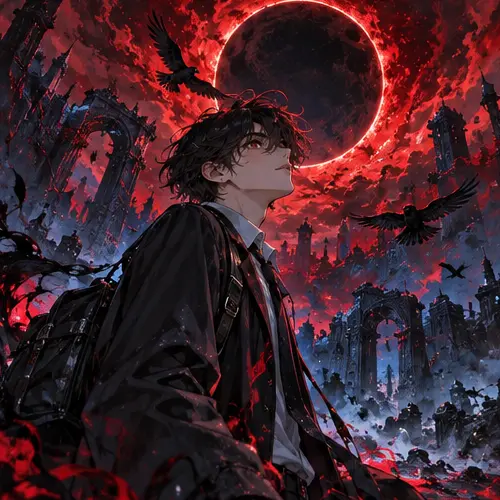
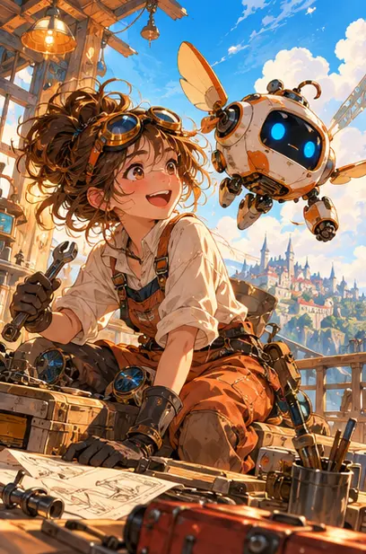
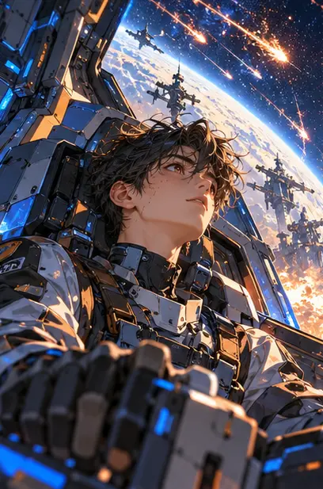
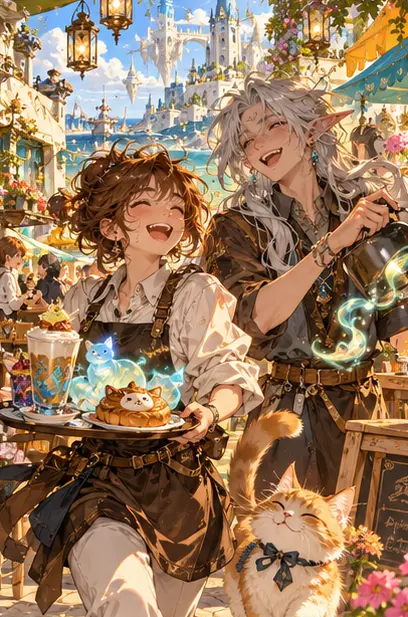
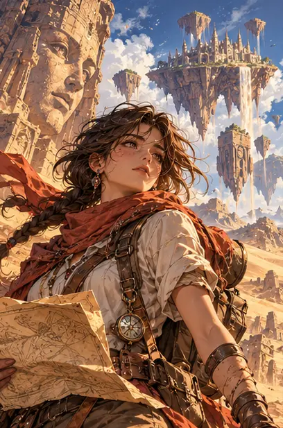
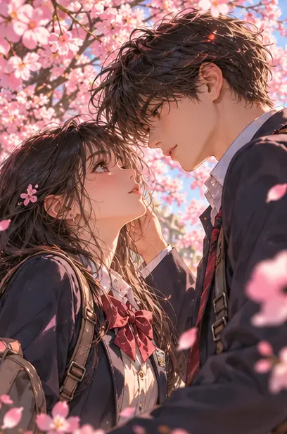
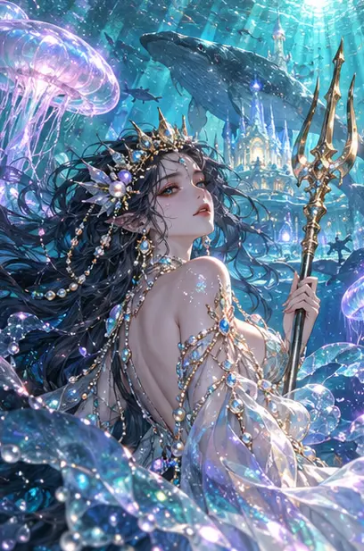

PORTAL DE LA SEMANA
Historias que te llevan a otro mundo.
Un catálogo para encontrar esa serie que no querrás dejar a medias.
Explorar el catálogo
PORTAL DE LA SEMANA
Un catálogo para encontrar esa serie que no querrás dejar a medias.
Explorar el catálogo
DESCUBRIMIENTO DEL DÍAFantasía · 34 episodios
Encuentra la historia que no sabías que necesitabas.
LO QUE MÁS ATRAPA
ELIGE UNA PUERTA
Cada mundo empieza con una elección.
BIBLIOTECA DE UNIVERSOS
Originales, descubrimientos y las historias que tú agregues.
Fantasía 24 episodios
Una heredera descubre que su reino vive dentro de un libro que alguien está reescribiendo.
Acción 38 episodios
Un mensajero cruza una ciudad imposible para entregar un secreto capaz de apagarla.

OriginalFantasía 17 episodios
Cada planta de una biblioteca olvidada conserva los recuerdos de una persona.
Romance 31 episodios
Dos desconocidos comparten un paraguas y vuelven a encontrarse en todas las tormentas.

Nuevo episodioMisterio 20 episodios
Cuando la luna se vuelve roja, los alumnos recuerdan una vida que nunca vivieron.
Aventura 15 episodios
Un tren atraviesa constelaciones y cada estación ofrece una segunda oportunidad.
Misterio 12 episodios
Una detective sigue pistas que solo aparecen reflejadas en la lluvia de medianoche.

Para sonreírComedia 22 episodios
Una inventora y su robot convierten los problemas cotidianos en aventuras absurdas.
Ciencia ficción 19 episodios
Una astronauta escucha una señal bajo el océano de un planeta sin mapas.
Drama 28 episodios
Una violinista recibe una partitura que cambia cada vez que recuerda a alguien.
Fantasía 34 episodios
En un bosque de faroles, una niña protege el secreto de un antiguo guardián.
Acción 26 episodios
Una guerrera cruza la montaña para recuperar el nombre que le arrebataron.
Terror 14 episodios
Una heredera inmortal vuelve a la catedral donde comenzó una promesa imposible.

En tendenciaCiencia ficción 27 episodios
Un piloto encuentra la señal de una civilización al otro lado de una lluvia de meteoros.

Para sonreírComedia 18 episodios
Dos amigos sirven café a criaturas mágicas y cada pedido termina en desastre.

OriginalAventura 23 episodios
Una arqueóloga sigue un mapa hacia ciudades que flotan sobre el desierto.

PopularRomance 32 episodios
Dos estudiantes se reencuentran cada primavera bajo el mismo árbol de cerezos.

Nuevo episodioFantasía 21 episodios
Una princesa del océano desafía a las estrellas para salvar a su pueblo.
No encontramos historias con esa búsqueda. Prueba otro título o género.
SELECCIÓN UMBRAL
NO PIERDAS EL HILO